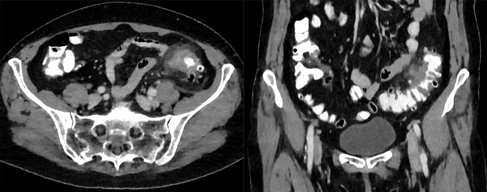
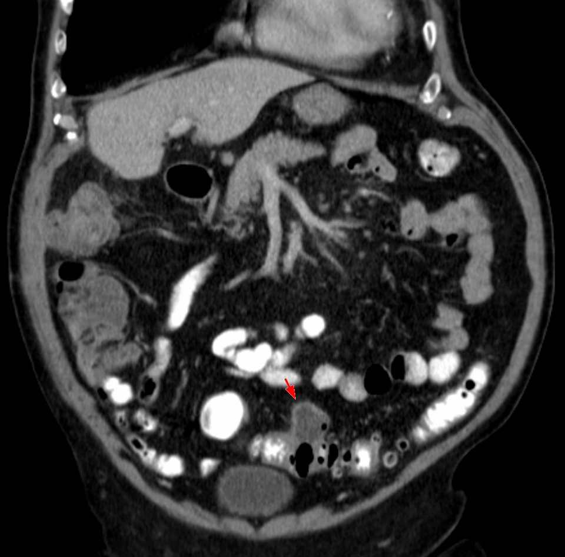

דיון מקרים: כאבי בטן שמאלית תחתונה
שלושה מטופלים, אותו מקום בבטן, שלוש אבחנות ושלוש החלטות שונות
בסוף המפגש תדעו
- לבנות אבחנה מבדלת לכאב בבטן שמאלית תחתונה: מעי, גינקולוגיה, דרכי שתן ומחלות "רפואיות"
- לבחור את הבדיקות הנכונות: מעבדה (כולל הריון ושתן), CT ומתי קולונוסקופיה
- להחליט מי עם דלקת סעיפים מטופל בבית, מי מאושפז ומי צריך ניקוז
- לזהות פיסטולה בין המעי לשלפוחית ולדעת איך מבררים ומטפלים
- להבדיל קוליטיס איסכמית מדלקת סעיפים ולזהות מתי היא מחייבת ניתוח
מה יכול לכאוב בבטן שמאלית תחתונה?
מה לשאול ולבדוק
- איך התחיל הכאב, אופי, הקרנה, משך. מעל שבוע כבר לא "חריף"
- בנשים: וסת אחרונה, היריונות, אמצעי מניעה, מחלות מין
- תרופות: סטרואידים ומדכאי חיסון מסווים פריטוניטיס. נוגדי קרישה שהופסקו: תסחיף
- בדיקה מלאה: מפשעות חובה. בדיקה רקטלית ואגנית כשיש חשד
- מעבדה בסיסית: ספירה, כימיה, לקטט. לפי הצורך: שתן, β-hCG בכל אישה בגיל הפוריות, סוג והצלבה
בת 54, יומיים של כאב משמאל למטה
- כאב שהתחיל בהדרגה, עצירות קלה, חוסר תיאבון. התקף ראשון
- בריאה, לא מקבלת תרופות. וסת אחרונה לפני שנתיים
- חום 37.9, דופק 92, ל״ד תקין
- רגישות ממוקדת בבטן שמאלית תחתונה, בלי התגוננות ובלי גוש. בלי דם ברקטום
- לויקוציטים 13,400, CRP 85. שתן תקין

CT מאשר: דלקת סעיפים של הסיגמה בלי מורסה
▸ למה CT ולא רק קליניקה?
CT מאשר את האבחנה, שולל אבחנות אחרות וקובע את החומרה. הסימנים: סעיפים, עיבוי דופן, הסננה של השומן סביב המעי ואין מורסה. צילום בטן לא ספציפי
▸ איזו דרגה?
Hinchey המתוקן Ia: דלקת תחומה סביב המעי (פלגמון). אם יש רק עיבוי דופן בלי הסננה סביב: דרגה 0
▸ קולונוסקופיה עכשיו?
לא. בזמן התקף ניפוח המעי עלול להחמיר נקב. אחרי ההחלמה: כ-1–3% מהמקרים הם בעצם גידול ולכן קולונוסקופיה בעוד 4–8 שבועות. במחלה לא מסובכת שאובחנה ב-CT ההחלטה יכולה להיות אישית
הביתה, עם תוכנית
▸ אשפוז או בית?
רוב המטופלים עם דלקת לא מסובכת מטופלים בבית. זה בטוח וחוסך, עם מעט אשפוזים חוזרים. משככי כאבים, נוזלים צלולים ואחר כך דיאטה דלת שאריות
▸ אנטיביוטיקה?
מטא-אנליזה לא הראתה שאנטיביוטיקה מקצרת את ההחלמה או מונעת סיבוכים וניתוח ולכן חלק מהרופאים לא נותנים. במטופלת בריאה עם דלקת קלה זו אפשרות סבירה
▸ מתי לחזור מיד?
כאב שמחמיר, חום גבוה, הקאות או חוסר יכולת לשתות: חשד למורסה או להחמרה
▸ "צריך לנתח אותי כדי שזה לא יחזור?"
לא אחרי התקף ראשון לא מסובך. רק 10–35% יחוו התקף נוסף וההתקפים בדרך כלל דומים בחומרתם לראשון. אגוזים, גרעינים ופופקורן מותרים. סיבים ופעילות גופנית מגינים
בן 68: חום וגוש בבטן שמאלית תחתונה
- חמישה ימים של כאב שמחמיר, חום 38.6, צמרמורות
- סוכרת. לפני שנה אושפז עם "דלקת במעי"
- דופק 104, ל״ד 122/74
- גוש רגיש בבטן שמאלית תחתונה, בלי פריטוניטיס מפושטת
- לויקוציטים 17,800, CRP 190
- CT: דלקת של הסיגמה עם מורסה של 6 ס״מ בצמוד למעי
קוראים את ה-CT

👆 לחצו על אזור בתמונה כדי לקרוא עליו
אוסף נוזלים תחום ליד המעי (החץ האדום): נקב קטן שהמזנטריום תחם. כך נראה Hinchey Ib. קטנה: אנטיביוטיקה. גדולה: ניקוז מלעורי
הכיסים הקטנים עם האוויר הם הסעיפים. הדופן מעובה והשומן סביבה "מלוכלך": אלה סימני הדלקת ב-CT
מלא בחומר ניגוד ובלי דלקת. המחלה ממוקמת בדרך כלל בסיגמה ובקולון היורד
צמודה לסיגמה המודלקת. לכן יש לעיתים דחיפות במתן שתן. מורסה כאן יכולה להתנקז לשלפוחית וליצור פיסטולה (ההמשך של המקרה)
מורסה: ניקוז ואחר כך החלטה
▸ דרגה וטיפול
Hinchey Ib: מורסה תחומה ליד המעי. מורסה קטנה מגיבה לרוב לאנטיביוטיקה לבד. מורסה גדולה צריכה ניקוז, בדרך כלל מלעורי בהנחיית הדמיה, יחד עם אנטיביוטיקה רחבת טווח
▸ מתי לחדר ניתוח?
מורסה שאי אפשר לנקז מלעורית ושלא משתפרת. וכמובן פריטוניטיס מפושטת: Hinchey III–IV
▸ אחרי השחרור
אחרי מורסה יש יותר חזרות וסיבוכים. ההנחיות האמריקאיות (ASCRS) ממליצות לשקול כריתה מתוכננת (ראיות בינוניות). לפני כן קולונוסקופיה: במחלה מסובכת שיעור הגידולים גבוה יותר
"יש לי בועות בשתן"
- דלקות שתן חוזרות עם כמה חיידקים בכל תרבית, אוויר בשתן, לפעמים שתן עכור עם חלקיקים
▸ האבחנה
פיסטולה בין המעי לשלפוחית: המורסה התנקזה לשלפוחית, בדרך כלל לכיפה שלה. זו הפיסטולה השכיחה בדלקת סעיפים, בעיקר בגברים
▸ הבירור
CT: אוויר או חומר ניגוד בשלפוחית בלי צנתור קודם. ציסטוסקופיה: דלקת במקום הפיסטולה. קולונוסקופיה לשלול גידול וקרוהן
▸ הטיפול
לא ניתוח חירום: המורסה כבר התנקזה. אנטיביוטיקה, בירור ואז כריתה של הקטע והפיסטולה עם השקה ראשונית. פתח קטן בשלפוחית: קטטר 7–10 ימים ואפשר ציסטוגרפיה לפני ההוצאה. פיסטולה למעי הדק: כריתה והשקה
בת 77: כאב פתאומי ואחריו שלשול דמי
- הבוקר כאב פתאומי והתכווצויות בבטן שמאלית ושעתיים אחר כך שלשול עם דם
- אי ספיקת לב, סוכרת, יתר לחץ דם, COPD. אתמול הייתה מיובשת עם לחץ דם נמוך
- חום 37.6, דופק 96
- רגישות בבטן שמאלית, בלי התגוננות. בבדיקה רקטלית: דם
- המוגלובין יציב
קוליטיס איסכמית
▸ למה לא דלקת סעיפים?
דימום רקטלי נדיר בדלקת סעיפים חריפה. השילוב של כאב פתאומי, התכווצויות ודם, כשהכאב קודם לדם, אופייני לקוליטיס איסכמית (כחצי מהמטופלים). הדימום בדרך כלל קטן
▸ למה דווקא היא ולמה דווקא שם?
מבוגרת, אישה, מחלות רקע ומצב של זרימה נמוכה (אי ספיקת לב, התייבשות). השכיח ביותר: הקולון השמאלי כולל הכפיפה הטחולית ואחריו הסיגמה. אזורי "פרשת המים": הכפיפה הטחולית (Griffiths) והמעבר בין הסיגמה לרקטום (Sudeck). הרקטום כמעט אף פעם לא נפגע
▸ הבירור
- מעבדה: ספירה, כימיה, לקטט, גזים. לויקוציטים, אוריאה ו-LDH גבוהים, המוגלובין ואלבומין נמוכים וחמצת: מחלה קשה
- צואה: C. difficile, ביצי טפילים ותרבית
- CT: עיבוי של קטע, הסננה, "טביעות אגודל". אוויר בדופן או בווריד השער: מחלה מלאה בעובי הדופן
- קולונוסקופיה בתוך 48 שעות היא בדיקת הבחירה, בלי ניפוח יתר ובלי להתקדם מעבר לקצה המחלה. לא בפריטוניטיס
רובם מחלימים, חלק צריכים ניתוח דחוף
▸ הטיפול הראשון
כ-80% משתפרים בתוך ימים בטיפול שמרני: צום, נוזלים בווריד, אנטיביוטיקה רחבת טווח (אירובים ואנאירובים), זונדה אם יש איליאוס. מתקנים זרימה נמוכה ומטפלים באי ספיקת הלב. בלי משלשלים ובלי סטרואידים
▸ יומיים אחר כך: חום, פריטוניטיס, לקטט עולה
חשד לאיסכמיה בכל עובי הדופן. ניתוח דחוף: כריתה אנטומית של הקטע הפגוע, בדרך כלל בלי השקה באותו ניתוח ולעיתים בטן פתוחה וחזרה אחרי 24 שעות. התמותה ב-30 יום מגיעה ל-25%
▸ ואם היא החלימה?
חלק מפתחים היצרות בקטע שנפגע: עצירות, צואה דקה וכאב. מתסמנים, או כשאי אפשר לשלול גידול: כריתה מתוכננת
מה מבדיל ביניהם
מחקרים שכדאי להכיר
480 מטופלים עם דלקת סעיפים קלה שאובחנה ב-CT, 15 בתי חולים בספרד. אשפוז: 3.3% בלי אנטיביוטיקה לעומת 5.8% עם. חזרה למיון דומה (7% מול 6.7%). לא נחות
Mora-López L et al. Ann Surg 2021;274(5):e435-42אנטיביוטיקה באופן סלקטיבי. כן לתת: מחלות רקע או שבריריות, הקאות, CRP מעל 140, לויקוציטים מעל 15,000, מחלה מסובכת. סרטן נמצא ב-1.9% (7.9% במסובכת, 1.3% בלא מסובכת) ולכן קולונוסקופיה אחרי 6–8 שבועות, אלא אם הייתה אחת טובה בשנה האחרונה
Peery AF et al. Gastroenterology 2021;160(3):906-1165 מטופלים אחרי כריתה וסגירת פיסטולה. ציסטוגרפיה ביום 2–3 והוצאת קטטר ב-90.8%. אף דליפה, אף החזרת קטטר ואף חזרה של הפיסטולה. ממצא של מרכז אחד, בלי קבוצת השוואה
Gallant B et al. Ann Surg 2026 (online ahead of print), PMID 42440264חמישה דברים לקחת למחלקה
- כאב בבטן שמאלית תחתונה: לחשוב גם על גינקולוגיה, דרכי שתן ו"רפואי". β-hCG ושתן לפי הצורך
- CT מאשר דלקת סעיפים ומדרג אותה. רוב הלא מסובכים מטופלים בבית
- מורסה גדולה: ניקוז. אחר כך קולונוסקופיה ושיחה על כריתה מתוכננת
- אוויר בשתן ודלקות שתן חוזרות אחרי דלקת סעיפים: פיסטולה לשלפוחית
- כאב פתאומי ואחריו דם במבוגר חולה: קוליטיס איסכמית. פריטוניטיס או אוויר בדופן: ניתוח